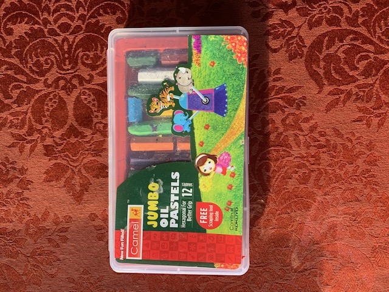
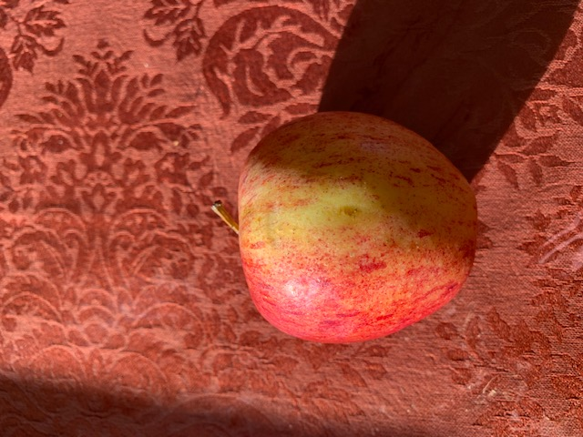
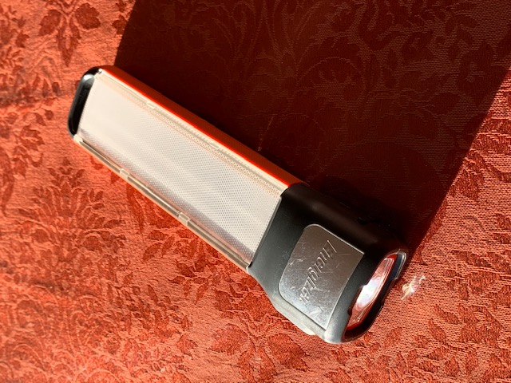
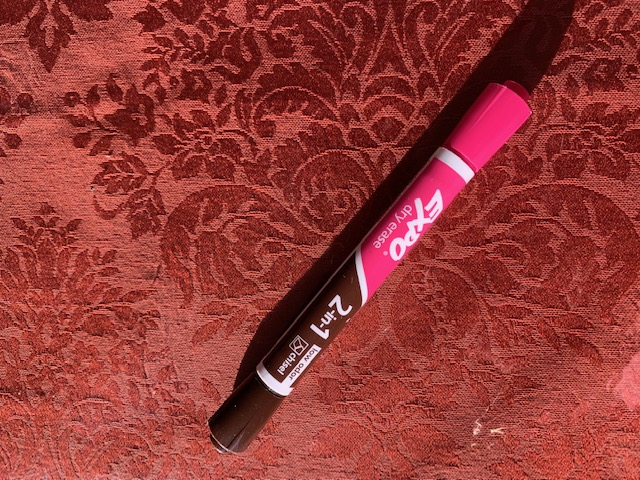

Google lens vs MobileNet
Google lens: Raid of
No Return(Nathan Hale's Hazardous Tales #7) A World War 2 Tale of the Doolittle Raid
MobileNet: comic book
Result: Google lens is more acurate

Google lens: Camel Oil pastels - Jumbo, 12 Count Pack
MobileNet: frame
Result: Google lens is more acurate

Google lens: McIntosh apple
MobileNet: JuJube
Result: Google lens is more acurate

Google lens: swizzle brush
MobileNet: Hair Brush
Result: MobileNet is more acurate

Google lens: Energizer 3 in 1 fusion light
MobileNet: stapler
Result: Google lens is more acurate

Google lens: Expo dry erase markers
MobileNet: microphone
Result: Google lens is more acurate
Out of all 6 things I tested, 1 was MobileNet and 5 Google lens. So I think that Google lens is more acurate